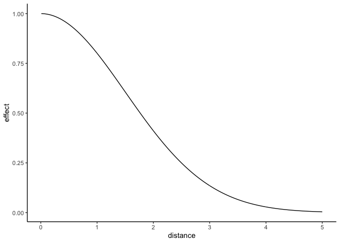
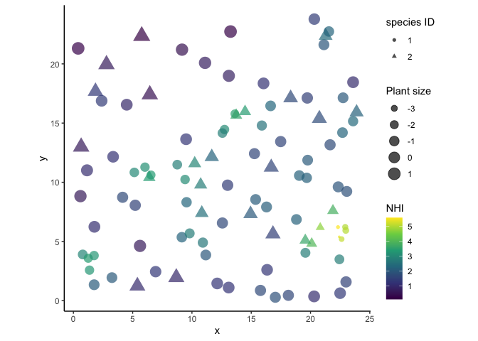
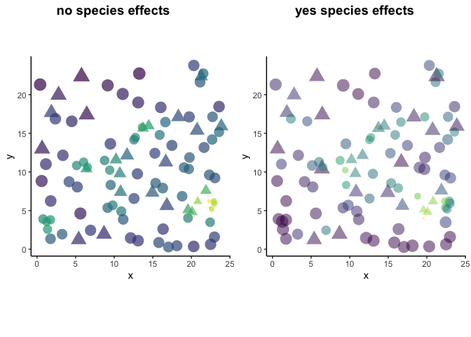

#load packages
library(tidyverse)
library(rethinking) #loads rstan and I like `precis()`
theme_set(theme_classic()) #I hate the defaultBackground
The goal of this vignette is to show how to incorporate effects from neighboring individuals into a Bayesian linear model using the super flexible & powerful language Stan. Canham et al. (2006) nicely shows how you can estimate the competitive effects from neighboring plants onto growth. I’ll show how to include a neighborhood host index (NHI) as a covariate. Here, I’ll assume the underlying function is a gaussian kernel:
\[ NHI_i = \sum_j^M \eta_{s[j]}^2 \ \text{exp}(-\frac{D_{ij}^2}{2\rho} ) \]
where (\(NHI\)) captures the cumulative effects of all neighboring plants (\(M\)) on individual (\(i\)). The influence of a neighboring plant (\(j\)) of species (\(s\)) decays with distance, (\(D_{ij}\)). Here, I’m making the tuning parameter (\(\eta_s\)) vary by the species identity of neighbor (\(j\)), while keeping (\(\rho\)) fixed.
The kernel function looks something like this:
eta <- 1 #affects the magntitude
rho <- 1.5 #affects the range
f_decay <- function(D) sum(eta^2 * exp(-.5/(rho^2) * D^2))
D <- seq(.01, 5, by = .01)
data.frame(D, y = sapply(D, f_decay)) %>%
ggplot(., aes(D, y)) +
geom_line() +
labs(x = 'distance', y = 'effect')
Much of the following code builds upon the simulated example in the awesome vignette by Barber et al. (2020). Their vignette shows how to incorporate sparse distance matrices into Stan using the segment() function and it helped me quite a lot!
In my first example, I show how to incorporate the neighbhorhood kernel function into Stan, and much of that info overlaps with the Barber et al. vignette. I’m going to gloss over the stuff they cover, so read that one first if you’re lost. In my second example, I show how to include a kernel parameter that varies by species.
Data simulation
Let’s simulate some plants belonging to 2 different species and assign them coordinates.
set.seed(2021)
N=100 #number of plants
#generate locations of plants
x=runif(N,min=0,max=24)
y=runif(N,min=0,max=24)
#get distance matrix
distmat <- fields::rdist(cbind(x, y))
#assign species ID. We'll have 2 different species.
spID <- rep(1L, N)
spID[sample(1:N, N/4)] <- 2LExample 1: No effects of species
Here, we’ll model the size of plants as a function of their neighborhood and assume the species identies of neighbors are negligible.
Generative model
The generative model is below:
\[ \begin{aligned} Size_i \sim \text{Normal}(\mu_i, \sigma) \\ \mu_i = \alpha_0 - NHI_i \\ NHI_i = \sum_j{\eta^2 \ \text{exp}(-\frac{D_{ij}^2}{2\rho^2})} \end{aligned} \]
Mean size of each plant (\(\mu_i\)) is a function of the global intercept (\(\alpha0\)) and NHI.
I also assume the effects of neighbors cuts off after a radius of 5. This helps the model be less massive. See the Barber vignette for a full explanation. The radius here is an arbitrary choice since I’m simulating the data, but IRL you won’t know exactly what the cutoff is. I suppose you could try a handful of cutoff thresholds and do model comparison.
Let’s simulate the response variable.
# Define parameters
a0=2 # Intercept
eta=1 # intensity of kernel
rho=1.5 # range of kernel
sigma=0.1
true_param1 <- list(a0, eta, rho, sigma)
names(true_param1) <- list('a0', 'eta', 'rho', 'sigma')
#cut off effect after some radius
radius = 5
distmat_cutoff <- ifelse(distmat>radius, 0, distmat)
#change all the 0s to NAs so R ignores them.
#Keeping distances as 0 would turn them into 1 (exp(0)=1) and we don't want that.
distmat_cutoff[distmat_cutoff == 0] <- NA
#generate response
NHI1 <- rowSums( eta^2 * exp(-distmat_cutoff^2 / (2*rho^2)), na.rm = T)
size1 <- rnorm(N, mean=a0 - NHI1, sd = sigma)
#put into dataframe
sim_df <- data.frame(spID, x, y, size1, NHI1)
#visualize plants
p1 <- ggplot(sim_df, aes(x, y)) +
geom_point(aes(color = NHI1, size = size1, shape = as.factor(spID)), alpha = .7) +
coord_equal() +
scale_color_viridis_c() +
scale_size_continuous() +
labs(color = 'NHI', shape = 'species ID', size = 'Plant size')
p1
Plants that are closely clumped are smaller and have more competitive effects from their neighbors.
Prep distance matrix
When distance matrices are large and when you have repeated sites (here there’s only one site), a good way to incorporate distance is with the segment function in Stan. This is especially true when you have a “sparse” distance matrix with lots of zeros.
A full distance matrix may look like this:
elements <- round(runif(n = 16, 1, 20))
elements[sample(1:16, 10)] <- 0
matrix(elements, nrow = 4)## [,1] [,2] [,3] [,4]
## [1,] 0 10 0 0
## [2,] 0 11 7 0
## [3,] 0 0 3 0
## [4,] 18 0 0 11But all of the non-zero elements in the matrix can be more efficiently represented using 3 vectors:
- number of non-zero (or non-NA) elements per row
- vector of non-zero (or non-NA) elements
- postion in the vector designating the start of each row
In Stan, the segment function uses these 3 vectors to compile a ragged array, which is a list of vectors with different lengths. Info in the Stan Manual on segment can be found here: https://mc-stan.org/docs/2_26/functions-reference/slicing-and-blocking-functions.html. Also, see the barber vignette, especially Figure 3, for a more complete explanation.
Let’s get those 3 vectors defined for the distance matrix.
# 1. number on non-NA values per row
#(equivalent to number of neighbors within radius)
n_nonNA <- rowSums(!is.na(distmat_cutoff))
# 2. vector of non-NA values
distmat_cutoff_vecfull <- as.vector(t(distmat_cutoff))
distmat_cutoff_vec <- distmat_cutoff_vecfull[!is.na(distmat_cutoff_vecfull)]
# 3. position of values, first in row
pos <- cumsum(c(1, n_nonNA[-length(n_nonNA)])) Run model
Prep data list for Stan.
data_list_nosp <- list(N = as.integer(N),
y = size1,
obs = length(distmat_cutoff_vec),
#easiest to square distance here
dist_vector = distmat_cutoff_vec^2,
n_nonNA = as.integer(n_nonNA),
pos = as.integer(pos))
#make sure integers are truly integers and dimensions make sense
str(data_list_nosp) ## List of 6
## $ N : int 100
## $ y : num [1:100] -0.58 -0.117 0.195 1.449 0.241 ...
## $ obs : int 1098
## $ dist_vector: num [1:1098] 21.92 10.01 5.73 17.88 10.26 ...
## $ n_nonNA : int [1:100] 14 21 6 5 16 11 12 12 19 7 ...
## $ pos : int [1:100] 1 15 36 42 47 63 74 86 98 117 ...Run the model.
#read in stan model. You can save the model below to a .stan file
stan_nosp <- stan_model(file = 'normal_NHI_nospecies.stan')
#print the model to see it.
print(stan_nosp)## S4 class stanmodel 'normal_NHI_nospecies' coded as follows:
## //gaussian model with global intercept and kernel covariate that doesn't incorporate species
## data{
## int<lower=1> N; //number of plants
## vector[N] y;//response variable (size of plant)
## int obs; //number of non-NA pairwise distances
## vector[obs] dist_vector; //pairwise distances^2
## int n_nonNA[N]; //number of neighbors for each plant
## int pos[N]; //position demarcating where each plant starts in dist_vector
## }
## parameters{
## real a0;
## real<lower=0> sigma;
## real<lower=0> eta;
## real<lower=0> rho;
## }
## transformed parameters{
## vector[N] mu;
## vector[N] NHI;
## //NHI kernel
## for(i in 1:N){
## NHI[i] = sum(eta^2 * exp(
## -segment(dist_vector, pos[i], n_nonNA[i]) /
## (2 * rho^2)));
## }
## //main model
## mu = a0 - NHI;
## }
## model{
## //priors
## a0 ~ normal(0, 5);
## eta ~ normal(0, 3);
## rho ~ normal(0, 5);
## sigma ~ exponential(1);
## //likelihood
## y ~ normal(mu, sigma);
## }#fit model. Using 1 chain with only 1000 iterations for the demo
fit_nosp <- sampling(stan_nosp, data = data_list_nosp, iter = 1000, chains = 1)##
## SAMPLING FOR MODEL 'normal_NHI_nospecies' NOW (CHAIN 1).
## Chain 1:
## Chain 1: Gradient evaluation took 0.000551 seconds
## Chain 1: 1000 transitions using 10 leapfrog steps per transition would take 5.51 seconds.
## Chain 1: Adjust your expectations accordingly!
## Chain 1:
## Chain 1:
## Chain 1: Iteration: 1 / 1000 [ 0%] (Warmup)
## Chain 1: Iteration: 100 / 1000 [ 10%] (Warmup)
## Chain 1: Iteration: 200 / 1000 [ 20%] (Warmup)
## Chain 1: Iteration: 300 / 1000 [ 30%] (Warmup)
## Chain 1: Iteration: 400 / 1000 [ 40%] (Warmup)
## Chain 1: Iteration: 500 / 1000 [ 50%] (Warmup)
## Chain 1: Iteration: 501 / 1000 [ 50%] (Sampling)
## Chain 1: Iteration: 600 / 1000 [ 60%] (Sampling)
## Chain 1: Iteration: 700 / 1000 [ 70%] (Sampling)
## Chain 1: Iteration: 800 / 1000 [ 80%] (Sampling)
## Chain 1: Iteration: 900 / 1000 [ 90%] (Sampling)
## Chain 1: Iteration: 1000 / 1000 [100%] (Sampling)
## Chain 1:
## Chain 1: Elapsed Time: 2.5818 seconds (Warm-up)
## Chain 1: 1.92301 seconds (Sampling)
## Chain 1: 4.50482 seconds (Total)
## Chain 1:#look at posteriors
precis(fit_nosp, pars = c('a0', 'sigma', 'eta', 'rho'), digits = 2)## mean sd 5.5% 94% n_eff Rhat4
## a0 1.998 0.0249 1.957 2.04 358 1
## sigma 0.097 0.0073 0.087 0.11 240 1
## eta 0.997 0.0051 0.989 1.01 312 1
## rho 1.509 0.0112 1.491 1.53 320 1true_param1## $a0
## [1] 2
##
## $eta
## [1] 1
##
## $rho
## [1] 1.5
##
## $sigma
## [1] 0.1Yay, the “true” parameters were recovered :)
Example 2: Species have an effect
In the second example, the species of the neighbors have different effects. I could make (_0) differ for each species too, but for this demo I’ll skip that. The model is as follows:
\[ \begin{aligned} Size_i \sim \text{Normal}(\mu_i, \sigma) \\ \mu_i = \alpha_0 - NHI_i \\ NHI_i = \sum_j{\eta_{s[j]}^2\ \text{exp}(-\frac{D_{ij}^2}{2\rho^2})} \end{aligned} \]
The model is exactly the same as above, except now (\(\eta\)) varies by species identity of neighbor \((\)j$). Let’s simulate the data.
# Define parameters
a0=2 # Intercept
eta2= c(0, 1) # intensity of kernel, one for each species
rho=1.5 # range of kernel
sigma=0.1
true_param2 <- list(a0, eta2, rho, sigma)
names(true_param2) <- c('a0', 'eta2', 'rho', 'sigma')
#generate response, species of neighbors have effects
NHI2 <- rep(NA, length.out = N)
for(i in 1:N){
NHI2[i] = sum((eta2[spID])^2 * exp(-(distmat_cutoff[i,])^2 / (2*rho^2)), na.rm = T )
}
size2 <- rnorm(N, mean=a0 - NHI2, sd = sigma)
#add size and NHI to dataframe
sim_df$size2 <- size2
sim_df$NHI2 <- NHI2
#visualize plants. triangles have strong effects, circles dont.
p2 <- ggplot(sim_df, aes(x, y)) +
geom_point(aes(color = NHI2, size = size2, shape = as.factor(spID)), alpha = .5) +
coord_equal() +
scale_color_viridis_c()
#compare plots
cowplot::plot_grid(p1 + theme(legend.position = 'none'),
p2 + theme(legend.position = 'none'),
labels = c('no species effects',
'yes species effects'))
The plot on the left shows the data that we modeled in the previous example. The plot on the right shows that despite having a dense clustering of individuals, some plants are still pretty big (ex/ bottom left corner of circles). In other areas where there are lots of triangles (spID 2), individuals are small. It’s because eta2= c(0, 1), where the effect of spID 1 is nothing and spID 2 is strong.
Prep data
We need a ragged array of speciesIDs in the same dimensions as the distance matrices in order to multiply the vectors representing () and distance. We’ll use the segment function on the speciesIDs to index the eta vector.
#create a long vector of species IDs, same length as the full distance matrix.
#Then remove the elements associated with that species where distance is NA.
#distmat vectorized by row, i.e. 'flattened'
#distmat_cutoff_vecfull
#spID, elements associated with full 'flattened' distance matrix
spID_vecfull <- rep(spID, N)
spID_vec <- spID_vecfull[!is.na(distmat_cutoff_vecfull)]
#verify lengths make sense
length(spID_vec) == length(distmat_cutoff_vec)## [1] TRUEAdd some new stuff to the data list. I explain the new data in the comments.
data_list_withsp <- list(
N = as.integer(N),
S = max(spID), #number of unique species
y = size2,
obs = length(distmat_cutoff_vec),
spID_vector = spID_vec, #species IDs associated with non-NA distances
dist_vector = distmat_cutoff_vec^2,
n_nonNA = as.integer(n_nonNA),
pos = as.integer(pos))
str(data_list_withsp) #double check data list## List of 8
## $ N : int 100
## $ S : int 2
## $ y : num [1:100] 1.591 0.334 1.959 2.237 1.372 ...
## $ obs : int 1098
## $ spID_vector: int [1:1098] 1 1 2 2 1 1 1 1 1 1 ...
## $ dist_vector: num [1:1098] 21.92 10.01 5.73 17.88 10.26 ...
## $ n_nonNA : int [1:100] 14 21 6 5 16 11 12 12 19 7 ...
## $ pos : int [1:100] 1 15 36 42 47 63 74 86 98 117 ...Run model
#read in model
stan_withsp <- stan_model(file = 'normal_NHI_withspecies.stan')
#see what is inside of the model
print(stan_withsp)## S4 class stanmodel 'normal_NHI_withspecies' coded as follows:
## //gaussian model with global intercept and kernel covariate that does incorporate species
## data{
## int<lower=1> N; //number of plants
## int<lower=1> S; //number of species
## vector[N] y;//response variable (size of plant)
## int obs; //number of non-NA pairwise distances
## int<lower=1, upper=S> spID_vector[obs]; //species identity of plants
## vector[obs] dist_vector; //pairwise distances^2
## int n_nonNA[N]; //number of neighbors for each plant
## int pos[N]; //position demarcating where each plant starts in dist_vector
## }
## parameters{
## real a0;
## real<lower=0> sigma;
## vector<lower=0>[S] eta;
## real<lower=0> rho;
## }
## transformed parameters{
## vector[N] mu;
## vector[N] NHI;
## vector<lower=0>[S] eta_sq;
## //NHI kernel
## for(s in 1:S){ //only real numbers, not vectors can be squared or used with power function
## eta_sq[s] = pow(eta[s], 2);
## }
## for(i in 1:N){
## NHI[i] = sum(eta_sq[segment(spID_vector, pos[i], n_nonNA[i])] .* exp(-segment(dist_vector, pos[i], n_nonNA[i]) /
## (2 * rho^2))); // vector multiplication uses .* while division with real numbers (i.e. rho) just needs /
## }
## //main model
## mu = a0 - NHI;
## }
## model{
## //priors
## a0 ~ normal(0, 5);
## eta ~ normal(0, 3);
## rho ~ normal(0, 5);
## sigma ~ exponential(1);
##
## //likelihood
## y ~ normal(mu, sigma);
## }#fit it
fit_withsp <- sampling(stan_withsp, data = data_list_withsp, iter = 1000, chains = 1)##
## SAMPLING FOR MODEL 'normal_NHI_withspecies' NOW (CHAIN 1).
## Chain 1:
## Chain 1: Gradient evaluation took 0.000402 seconds
## Chain 1: 1000 transitions using 10 leapfrog steps per transition would take 4.02 seconds.
## Chain 1: Adjust your expectations accordingly!
## Chain 1:
## Chain 1:
## Chain 1: Iteration: 1 / 1000 [ 0%] (Warmup)
## Chain 1: Iteration: 100 / 1000 [ 10%] (Warmup)
## Chain 1: Iteration: 200 / 1000 [ 20%] (Warmup)
## Chain 1: Iteration: 300 / 1000 [ 30%] (Warmup)
## Chain 1: Iteration: 400 / 1000 [ 40%] (Warmup)
## Chain 1: Iteration: 500 / 1000 [ 50%] (Warmup)
## Chain 1: Iteration: 501 / 1000 [ 50%] (Sampling)
## Chain 1: Iteration: 600 / 1000 [ 60%] (Sampling)
## Chain 1: Iteration: 700 / 1000 [ 70%] (Sampling)
## Chain 1: Iteration: 800 / 1000 [ 80%] (Sampling)
## Chain 1: Iteration: 900 / 1000 [ 90%] (Sampling)
## Chain 1: Iteration: 1000 / 1000 [100%] (Sampling)
## Chain 1:
## Chain 1: Elapsed Time: 4.87774 seconds (Warm-up)
## Chain 1: 2.95811 seconds (Sampling)
## Chain 1: 7.83585 seconds (Total)
## Chain 1:#see posteriors
precis(fit_withsp, pars = c('a0', 'sigma', 'eta', 'rho'), depth = 2, prob = .9)## mean sd 5% 95% n_eff Rhat4
## a0 2.007 0.0181 1.9802 2.04 337 1
## sigma 0.112 0.0085 0.0985 0.13 294 1
## eta[1] 0.044 0.0305 0.0041 0.10 365 1
## eta[2] 1.007 0.0149 0.9820 1.03 308 1
## rho 1.505 0.0284 1.4587 1.55 263 1true_param2## $a0
## [1] 2
##
## $eta2
## [1] 0 1
##
## $rho
## [1] 1.5
##
## $sigma
## [1] 0.1Yay, the posteriors are definitely within the range of the true values.
Conclusion
This is just the tip of the iceberg, but it shows how you can estimate parameters within a kernel function and have those parameters also vary by species. Please reach out to me if you have questions, corrections, or feedback.
Acknowledgements
Extra thank you to Cristina Barber and Trevor Caughlin for getting the ball rolling and answering my emails about their vignette.